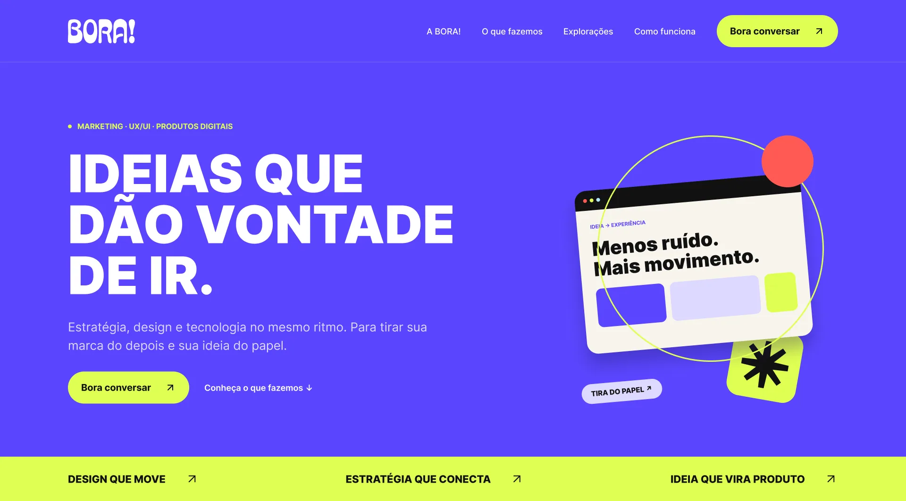

Do problema ao handoff.
Quatro projetos que mostram lados diferentes do meu trabalho: produto digital de ponta a ponta, dois sistemas corporativos complexos e identidade de marca.


FutureMind
Plataforma de terapia online pensada pra ser fácil de começar e segura de continuar. 271 telas, 97 componentes e handoff completo.
Ver estudo de caso →

Dígitro Backup
Um produto, três módulos e três públicos: a gestão da Dígitro, o painel do cliente e o agente que roda no servidor local. Com foco em alertas claros e cenários de erro.
Ver estudo de caso →

IntelleTotum
Ferramenta de análise investigativa que transforma milhares de registros de comunicação em padrões, conexões e pistas. Cinco visões analíticas num só painel.
Ver estudo de caso →
BORA!
Identidade de um estúdio de design e marketing: manual, kit gráfico, mockups, redes sociais, apresentação comercial e landing page.
Ver projeto →